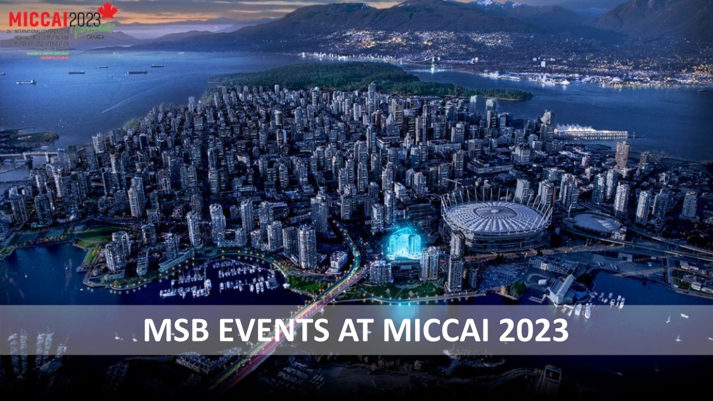

Participate in MSB Events at MICCAI 2023

October 9th/10th, 2023: Morning runs
Embrace the day with a refreshing 5 km morning run in Stanley Park, Vancouver, organized by MICCAI Student Board. As dawn breaks, the park comes alive, offering a spectacular view of downtown Vancouver, framed by nature's grandeur. Our route takes us through lush rainforest trails, alongside the breathtaking seawall that mirrors the calm waters. It's a wonderful opportunity to connect with fellow MICCAI attendees, invigorate your spirit, and set the pace for the day. Lace up your running shoes, bring your smiles, register, and join us in welcoming the new day! All fitness levels are welcome.
October 9th, 2023: Academia and Industry Panel and Networking Event

The MSB has a goal to provide opportunities for professional development and networking. The A&I event educates current students on career possibilities post graduation, and provides students a venue to ask questions related to professional development. this event will begin with a one-hour moderated panel discussion on career development and the differences between academic and corporate research. Panelists are selected to represent a diverse set of backgrounds, perspectives and experiences. The second hour of the A&I event will be used for a networking session.
October 11th, 2023: Soccer Game

The traditional MICCAI soccer game will return this year, in the event of an in-person conference. It will take place on an 11-a-side soccer field. Participants will be transported to and from the event. The game will be hosted at 7 P.M. on October 11th evening.
October 12th, 2023: Forbidden Vancouver Tour
Dive into the shadows of Vancouver's history with the Forbidden Tour, a unique journey that peels back the layers of the city's past. As we traverse through mysterious alleyways and historic landmarks, our expert guide will spin enthralling tales of prohibition-era scandals, legendary mysteries, and intriguing incidents that have marked Vancouver's history. This immersive exploration goes beyond the city's conventional tourist paths, offering a deeper understanding of Vancouver's cultural evolution and the forces that have shaped its identity. Be prepared for an evening of discovery, fascination, and a dash of the unexpected. See you on the forbidden side!
October 13th, 2023: Vancouver Full-day Tour
Experience the diverse splendors of Vancouver in a full-day tour designed to mesmerize and inspire. Immerse yourself in the natural beauty of Stanley Park, an urban oasis boasting lush trails, lakes, and beaches. Explore the bustling Granville Island, an artistic hub where you'll find a maze of artisan shops, galleries, and a lively food market. Dive into the rich cultural heritage in Chinatown, one of North America's oldest, filled with historic architecture and exotic cuisine. Absorb the serene beauty at English Bay, an urban beach offering stunning views of the city and ocean. Delve into history in Gastown, Vancouver's oldest neighborhood. Here, cobblestone streets, independent boutiques, and the world-famous steam clock create a charming blend of the past and present. Take part in this immersive journey that brings you to the heart of Vancouver.